Especialistas em madeira
Madereiras laminadoras, serrarias, plainers e arredondadores de toras. É o nosso setor de origem.
A TORNOARIA ZICO projeta, fabrica e mantém linhas completas para madereiras laminadoras e serrarias. Do conceito 3D à peça usinada, sem tirar a mão da sua fábrica.
Somos uma oficina industrial de alta precisão com foco absoluto no setor madeireiro. Trabalhamos lado a lado com a AB Engenharia como parceiro técnico, unindo projeto, fabricação e manutenção em uma única cadeia de qualidade.
Nossa estrutura conta com Torno CNC, centros de usinagem ROMI, equipamentos de corte plasma CNC e uma equipe de especialistas em solda. Cada peça sai de um projeto mecânico avançado em 3D — o que vai para a máquina já foi simulado e validado.
Atendemos principalmente madereiras laminadoras e serrarias: um segmento em que cada parafuso, bucha e redutor impacta direto na qualidade da chapa produzida. Do projeto à manutenção, conhecemos cada máquina do chão de fábrica.
Madereiras laminadoras, serrarias, plainers e arredondadores de toras. É o nosso setor de origem.
Modelagem, simulação de interferência e análise de resistência antes de qualquer corte.
Usinagem, solda e montagem — sem terceirizar o que define a qualidade da sua linha.
Suporte técnico presencial, peças de reposição em prontidão e reparos com conhecimento real.
Do torno CNC aos centros de usinagem ROMI: as máquinas que fazem a sua peça acontecer, com manutenção garantida por quem construiu.
A peça complexa sai perfeita na primeira usinagem.
Torneamento computerizado de alta precisão para peças complexas e grandes diâmetros, com acabamento de superfície controlado e repetibilidade de lote.
Vertical, nacional e com precisão geométrica de fábrica.
Centros de usinagem de fabricação nacional — alta rigidez, suporte direto e peças de reposição sempre disponíveis.
Alto volume com melhor acesso à peça.
Usinagem horizontal com paletização para produção em série,ideal para componentes que se repetem na linha.
Chapa de grande porte, corte de precisão.
Corte de alta exatidão em chapas de grande formato, com bisel, contornos complexos e repetibilidade industrial.
Especialistas certificados de solda.
Fontes TIG inverter e MIG/MAG com exaustor. Estruturas soldadas para equipamentos industriais, bases, chassi e quadros.
Acionamento com suporte certificado.
Somos autorizados WEG: motores, redutores, inversores de frequência, soft-starters e proteções de acionamentos.
Preventiva, corretiva e preditiva. Contratos completos de linha, redução de paradas e suporte técnico em campo.
Fabricação, montagem e comissionamento de linhas de laminação e de arredondamento de toras.
Flanges, buchas, mancais, pinões e redutores usinados com tolerância controlada e prontidão para reposição.
Recuperação estrutural, revisão de aligning eadequate de produção para aumentar o rendimento do seu equipamento.
Nove módulos em sintonia, na ordem real do processo. Cada equipamento tem fotoampliada e modelo 3D interativo — clique para alternar entre os dois e amplie à vontade.
Da tora bruta à lâmina pronta: fluxo contínuo, corte que aproveita cada centímetro e máquinas que aguentam o turno mais pesado.
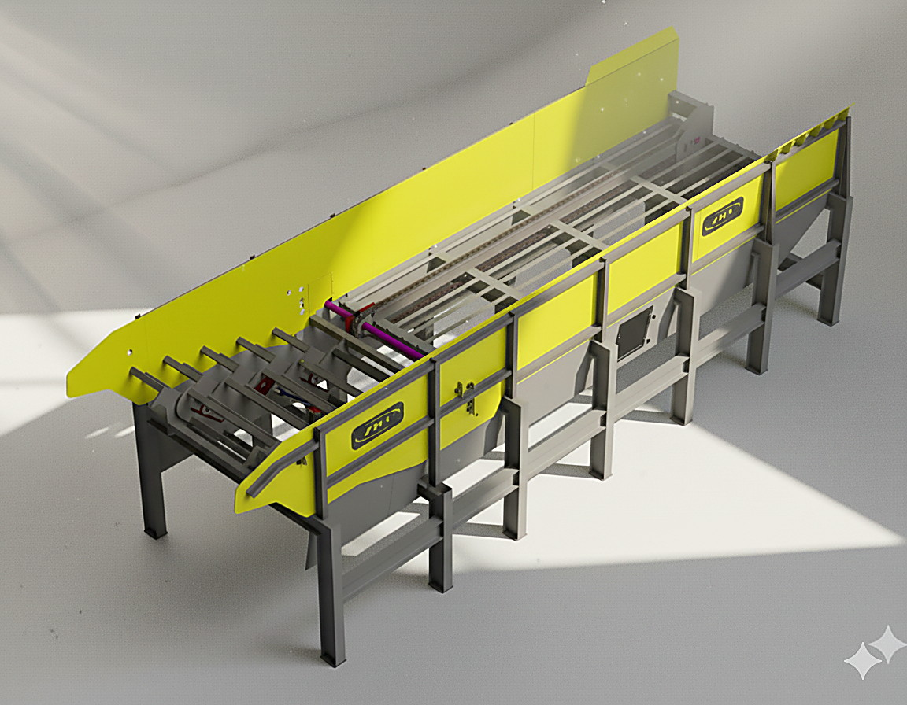
01 · Entrada“Recebe o caminhão inteiro sem sufoco.”
Primeira da linha: recebe toras em grande volume e funciona como pulmão de entrada. A serra nunca fica esperando madeira.
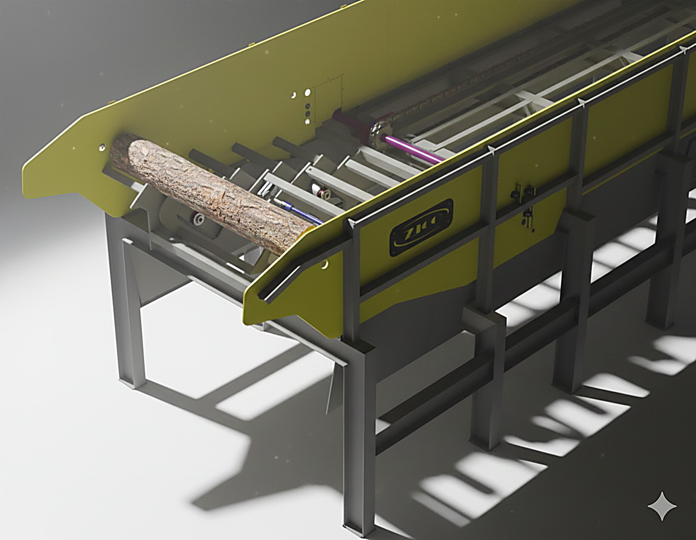
02 · Unitizar“Do bolo bagunçado à fila perfeita.”
Pega o volume da esteira e entrega UMA tora por vez para a Serra Log Split, com espaçamento certo. Protege a serra contra entupimento.
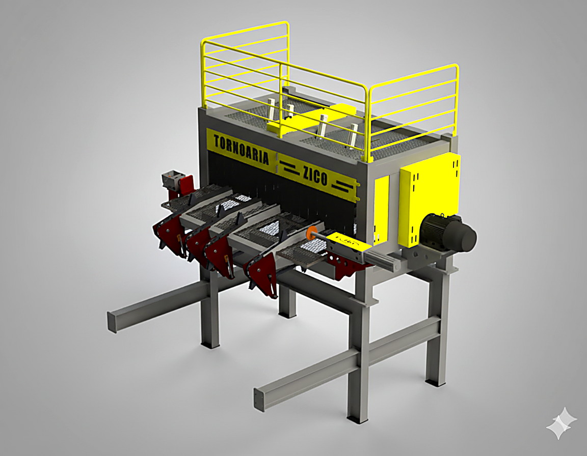
03 · Corte Estrela da linha“Divide ao meio e multiplica seu lucro.”
A estrela da linha: divide a tora em duas metades no sentido longitudinal, eliminando a tortuosidade logo no início e aumentando o aproveitamento em todo o processo.
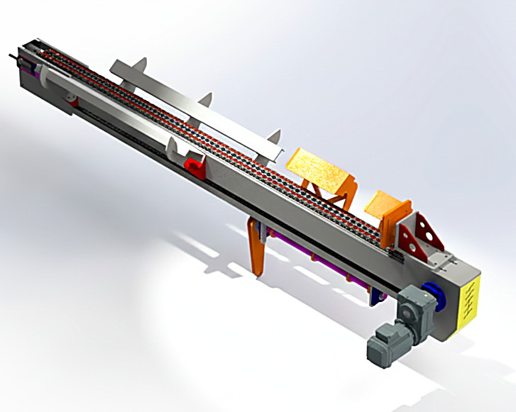
04 · Virar“Vira a meia-tora com a face para baixo.”
Após o corte, posiciona cada metade com batente amortecido e tomba pneumaticamente para o Stepfeeder 1.4. Sem empilhadeira, sem braço, sem parada.
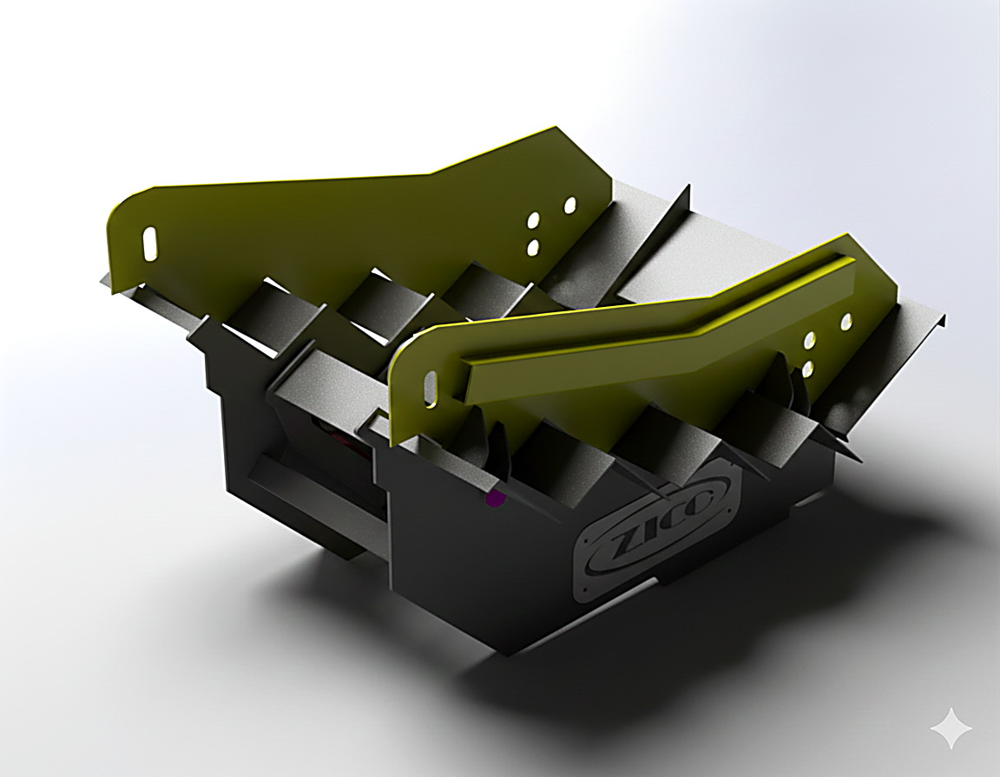
05 · Dosar“Meia-tora organizada rumo ao arredondador.”
Recebe as meias-toras cortadas e unitiza em fila única e espaçada para alimentar o Arredondador. Guias ajustáveis abraçam cada diâmetro sem travar.
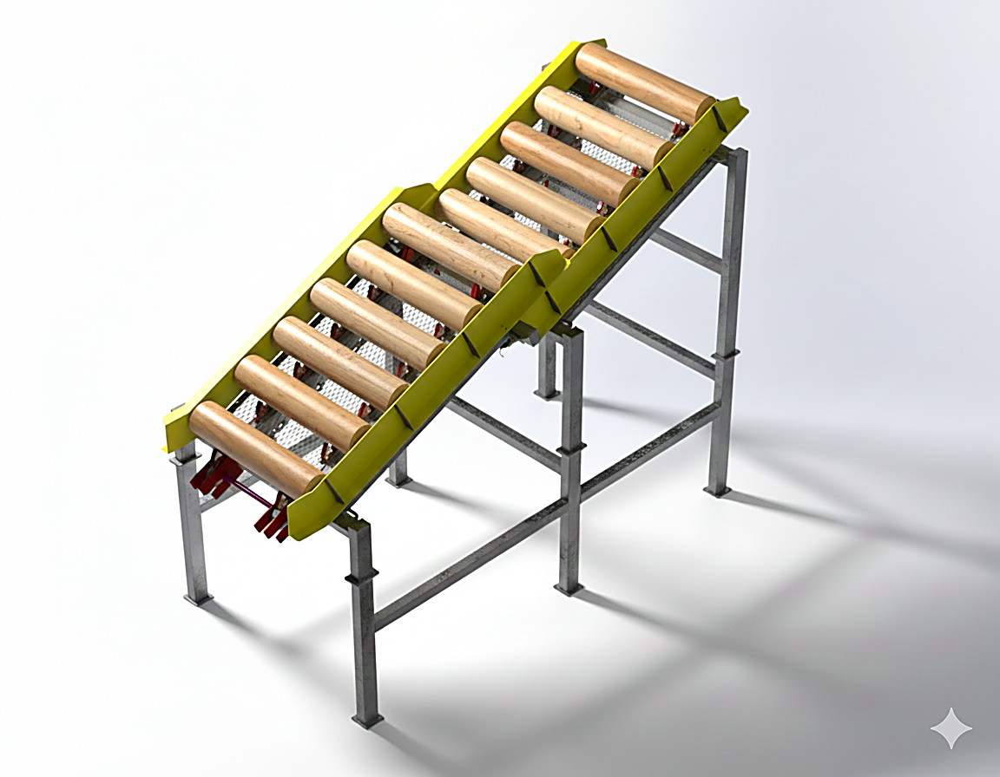
06 · Alinhar“Desempenha a tora torta sozinha.”
Última esteira antes do torno: acumula como pulmão e corrige o ângulo da tora com tração dupla independente — um lado anda, o outro segura, e ela entra a 90°.
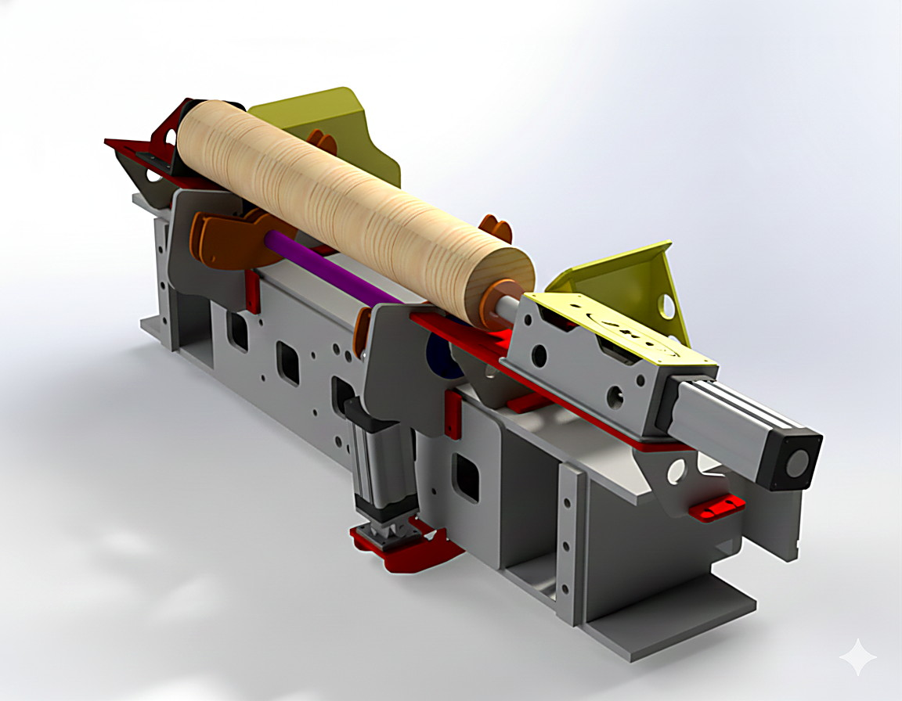
07 · Centrar“Mira milimétrica antes da laminação.”
No topo da esteira pulmão, empurra a tora contra o batente de referência e alinha o eixo exato de laminação com o centro do torno. É aqui que nasce a lâmina perfeita.
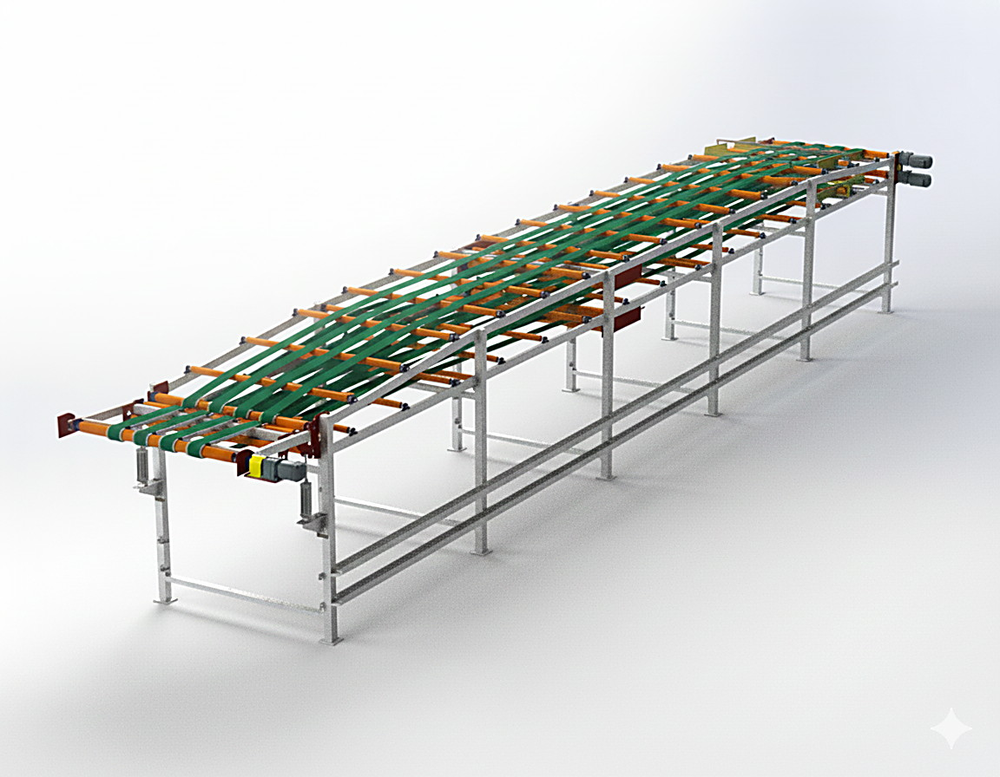
08 · Lâmina“Folha contínua, zero tempo morto.”
Transporta em alta velocidade a folha laminada do torno até a guilhotina em dois níveis. Enquanto uma tora termina num deck, a próxima já entra no outro.
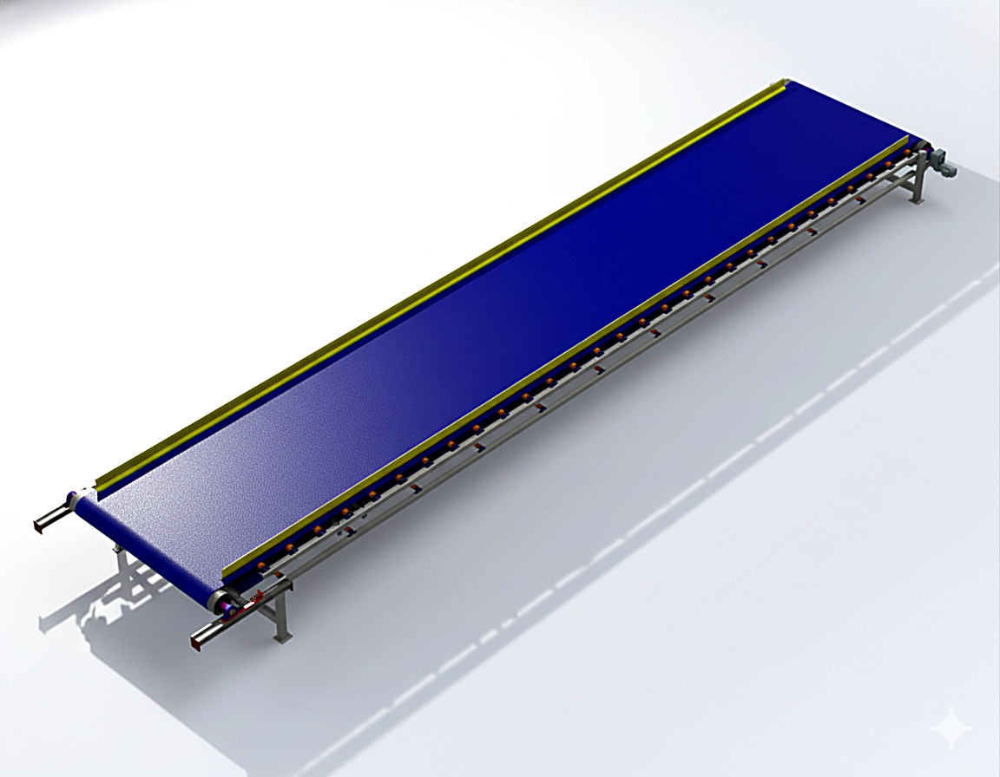
09 · Limpar“Casca e refilo somem sozinhos.”
O tapetão sob a linha recolhe cascas, galhos e terra e manda direto para o picador. No retorno pós-guilhotina você ainda recupera miolo bom para reuso.
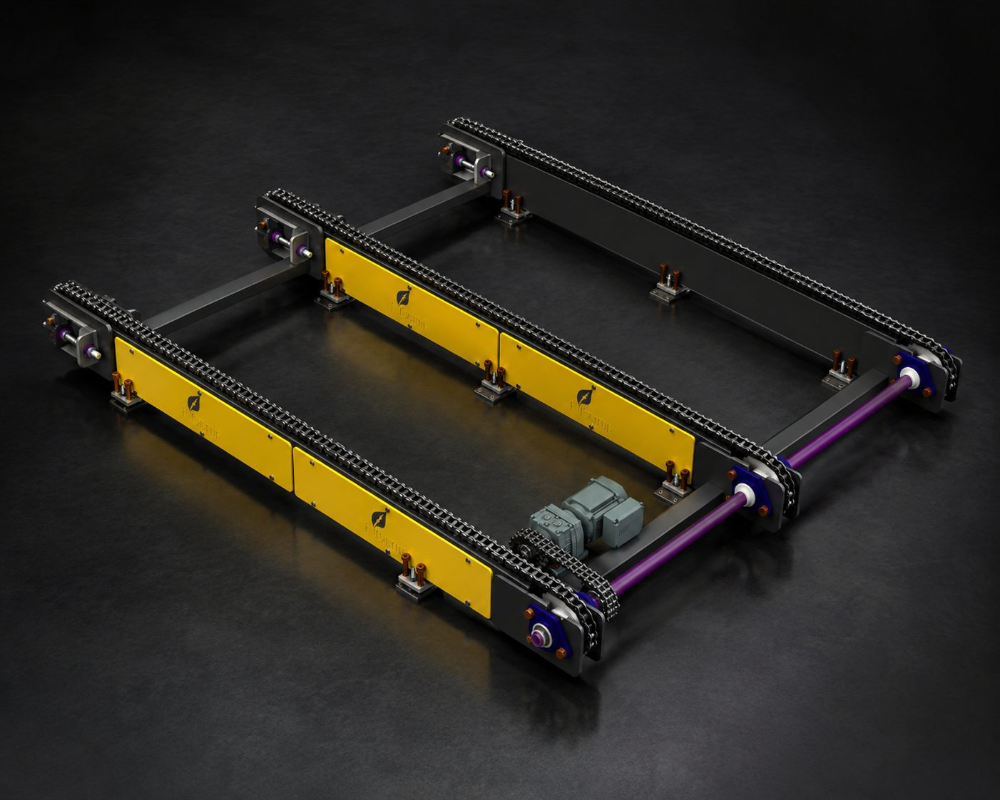
MFC · Transporte Modelo 3D disponível“O modelo 3D completo, para você explorar agora.”
Esteira de transporte com três correntes ASA 100, eixo tensionador regulável, motorredutor R37 e mesa com guias bilaterais. Este é um exemplo real de como os nossos modelos 3D aparecem no site: gire, amplie e toque nas peças para destacá-las.
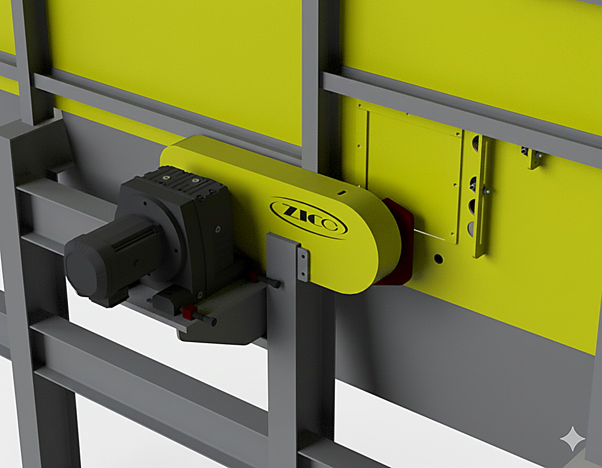
Poeira, turno dobrado e cobrança por produção. Nossas máquinas foram desenhadas nesse chão de fábrica.
Modelagem, simulação de interferência e análise de resistência — tudo validado antes de a máquina cortar o primeiro milímetros.
Projeto mecânico 3D completo de linha de laminação, com conjunto de plainers, corte de tábuas, seccionamento e fluxo de saída — do conceito ao comissionamento.
Projeto 3D da linha de arredondamento com alinhamento, torneamento e classificação automática — otimizando o aproveitamento de cada tora.
Sistemas completos de transporte interno da serraria: esteiras de entrada, pulmão, tração dupla e coleta de resíduos, com modelo 3D navegável.
Flanges, buchas, mancais, pinões e redutores com tolerância controlada. Modelados em 3D e fabricados em torno CNC e centros ROMI.
Estruturas soldadas para equipamentos industriais: bases, suportes, chassi e quadros, com análise de tensão e execução por especialistas TIG e MIG.
Revisão completa de linha existente: recuperação estrutural, ajuste de alinhamento, troca de correntes e recuperação de rendimento.
Nenhum projeto sai da nossa engenharia sem estar documentado. Você recebe tudo o que precisa para manter a máquina por anos.
Arraste um .glb sobre o visor para testar
Projeto próprio, do conceito à comissionamento. É a engenharia que entende a sua linha porque nasceu dentro dela.
Nosso projeto nasceu em serraria de verdade — com poeira, turno dobrado e cobrança por produção. Isso muda tudo: uma máquina que funciona no projeto de CAD precisa funcionar também quando o operador está com pressa, a tora veio torta e o turno precisa de produção.
Por isso trabalhamos com engenharia e fabricação na mesma casa. Quem desenha conhece a usinagem; quem usina participa do desenho. Não existe tradução de projeto nem disputa de culpa quando algo precisa mudar.
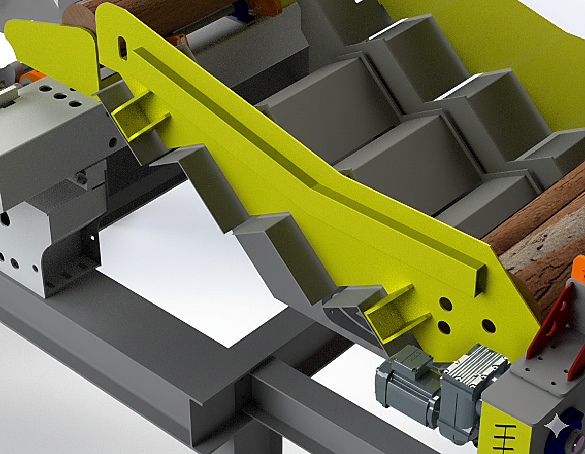
Linhas completas de laminação, plainers, corte de tábuas e sistemas de avanço. Fabricação, manutenção e reconstrução.
Linhas de arredondamento de toras, afiação de lâminas, sistemas de avanço e alimentação — da tora bruta ao produto calibrado.
Esteiras de entrada, pulmão, tração dupla e coleta de resíduos — o que leva a tora e tira o refilo.
Revisão de linhas existentes, recuperação estrutural e ajuste fino para devolver rendimento à máquina.
Manda a gente o problema. A primeira análise é por nossa conta.
Envie sua necessidade. Nossa equipe responde rápido.
Trabalhamos com a AB Engenharia — projeto, fabricação e manutenção em uma única cadeia.
Revenda e assistência de motores, redutores e acionamentos WEG com suporte técnico certificado.
Orçamentos para madereiras, serrarias e empresas do setor madeireiro.
Receba proposta da Linha Tornado 1.4 completa ou por módulos.